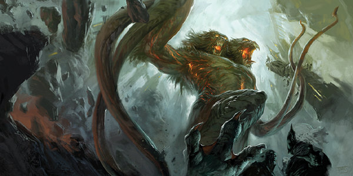
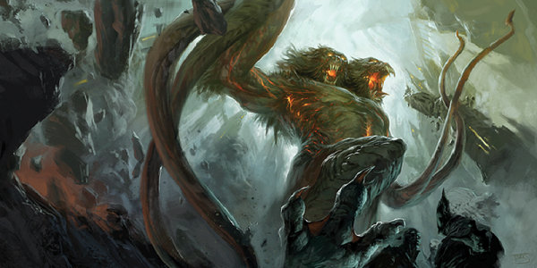

Druid
A lovely philosophy about the druid, and one that I wholeheartedly agree with, is that the druid doesn’t care about any one tree(unless it’s some really special tree). Trees burn, they wither, and they die. What the druid cares about is the big picture, the forest as a whole, nature itself.
The druids in the fifth edition of Dungeons and Dragons can serve many roles, and do so well. They serve as effective healers, they have invaluable spells for a survival-focused campaigns and with their amazing Wild Shape ability, they’re can, for a time, serve as hardy tanks and dish out large amounts of damage.
The Circle of the Moon has long been the most popular path for druids to walk. Wild Shape is often the most fun and interesting feature of the druid class and this circle’s propensity for Wild Shape makes it an obvious choice.